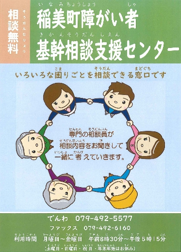

相談したい
稲美町障がい者基幹相談支援センター
１．障がい者基幹相談支援センターとは
稲美町内にお住まいの障がいのある方やそのご家族が気軽に相談できる総合窓口として、令和2年7月に町からの受託をした「稲美町障がい者基幹相談支援センター」を開設しました。
相談は無料です。相談内容等の秘密は守りますので、安心してご相談ください。
主な事業内容は以下の通りです。
（１)悩みごとを一緒に考えていきます。
障がいのある方やそのご家族が住み慣れた稲美町で安心して生活できるように、社会福祉士などの資格を持つ相談員が、悩みごとを一緒に考えていきます。
（２）みんなで相談支援する仕組みづくりを行います。
地域の相談支援事業者に向けて会議や研修会などを開催し、関係者みんなで考える仕組みづくり、障がいのことについて学ぶ機会づくりを行います。
（３）自宅で生活することを応援します。
住み慣れた自宅で安心して生活ができるように、町と一緒に、医療機関や入所施設などとの調整や、福祉サービスなどの利用支援を行います。
（４）権利を守ること、虐待を防ぐことのお手伝いをします。
町と一緒に、成年後見制度を広める活動や利用のお手伝い、虐待を防ぐための取り組みを行います。
２．開設日時
月曜日から金曜日 ※祝祭日、年末年始（12月29日～1月3日）を除く
午前8時30分から午後5時15分
３．場所
加古郡稲美町加古4369-3 障害者ふれあいセンター内
４．連絡先
でんわ 079-492-5577
ＦＡＸ 079-492-6160
メール kikansoudan@inami-shakyo.or.jp

稲美町障がい者基幹相談支援センターパンフレット PDF・879KB
4 cities map（稲美町、加古川市、高砂市、播磨町の障がい福祉サービス事業所検索サイト）
障がい福祉分野 専門的人材養成研修助成金のご案内
稲美町では、令和8年度から、町内の障害福祉サービス事業所に勤務する職員の研修受講費用を助成する制度を始めました。強度行動障害のある方や医療的ケア児等への支援ができる専門的な人材を育てることで、町内の受入れ体制を充実させることを目的としています。
詳しくは、下記案内をご参照いただくか、稲美町障がい者基幹相談支援センター（電話 079-492-5577／平日8:30～17:15）までお問い合わせください。
専門的人材養成研修助成金の案内（チラシ） PDF・483KB
助成金交付申請書兼請求書（PDF） PDF・106KB
助成金交付申請書兼請求書（Excel） PDF・32KB
在職・勤務証明書（PDF） PDF・76KB
在職・勤務証明書（Excel） PDF・28KB
暮らしの法律相談 司法書士相談
相談内容）登記・相続・遺言・成年後見など
※ご相談内容は、司法書士法に定める範囲に限ります
※相談は原則おひとり30分まで
※予約要、相談無料
※1枠30分以内、1日3枠まで
予約☎079-492-8668
相談日 | ところ |
|---|---|
原則毎月第１木曜日 （13:30～14:30） | 総合福祉会館 （国岡6-184） |
原則毎月第３木曜日 （13:30～14:30） | 母里福祉会館 （野寺113-1） |
【お問合せ先】
稲美町社会福祉協議会 TEL 079(492)8668 FAX079(492)9170
暮らしの法律相談 弁護士相談
相談内容）法律相談全般
※相談は原則おひとり30分まで
※前日正午までの予約が必要（先着4名）
※相談無料
相談日 | ところ |
|---|---|
原則毎月第２木曜日 13:00～15:00 | 障害者ふれあいセンター （加古4369-3） |
【お問合せ・お申込先】
稲美町社会福祉協議会 TEL 079(492)8668 FAX079(492)9170
認知症相談・介護相談
「認知症かもしれない」「最近症状がひどくなってきている」
「これからの介護のことで聞きたいことがある」など、
認知症に関すること、在宅介護に関すること、がん療養に関すること、なんでもご相談ください。
相談日 | 相談方法 |
|---|---|
随時（まずはご連絡ください。） | 来所、電話など |
【お問合せ・お申込先】
居宅介護支援事業所こぶし（兵庫県第2872800038号）
兵庫県加古郡稲美町加古5141番地 在宅サービスセンター内
TEL 079(492)8779 FAX079(492)7102
生活福祉資金
生活福祉資金貸付制度は、他制度の利用が困難な低所得者世帯や障害者・高齢者世帯の一時的な経済的ニーズに応えるとともに、その在宅福祉及び社会参加の促進を図ることを目的とした制度です。
また、この制度は単に資金の貸付を行うものではなく、市区町社会福祉協議会やお住まいの地域を担当する民生委員がさまざまな過程で援助・助言を行う場合があります。
詳しくはコチラ